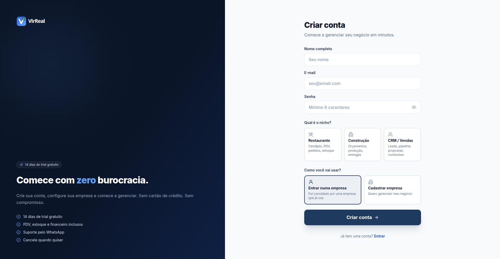

SaaS · Multi-tenantVidaReal Platform
Plataforma de gestão para múltiplos nichos — restaurantes, construção, serviços — com WhatsApp integrado e dashboards.
Next.js 16TypeScriptTailwind 4Prisma 7TiDBEvolution APIJWT/RBAC
71modelos
71rotas API
1.466testes